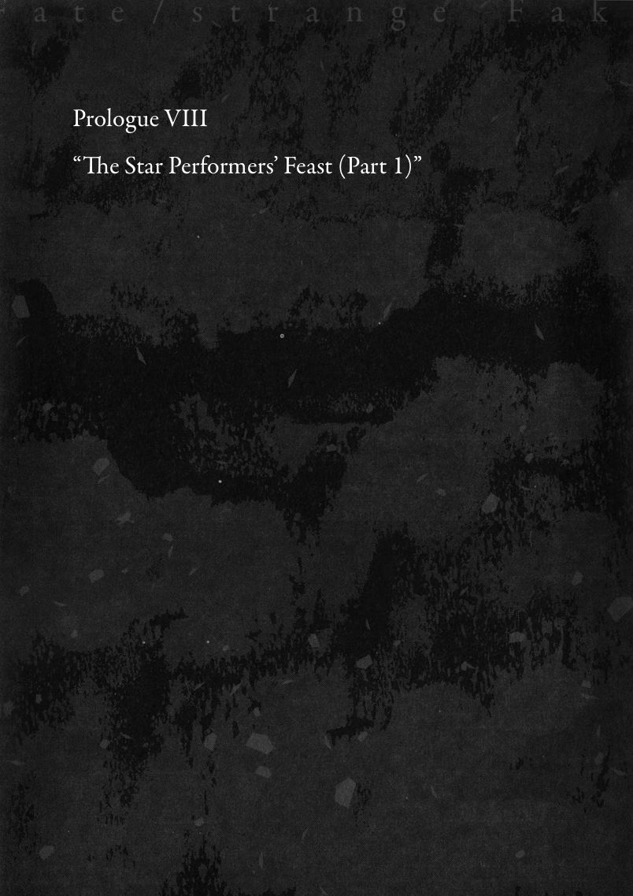
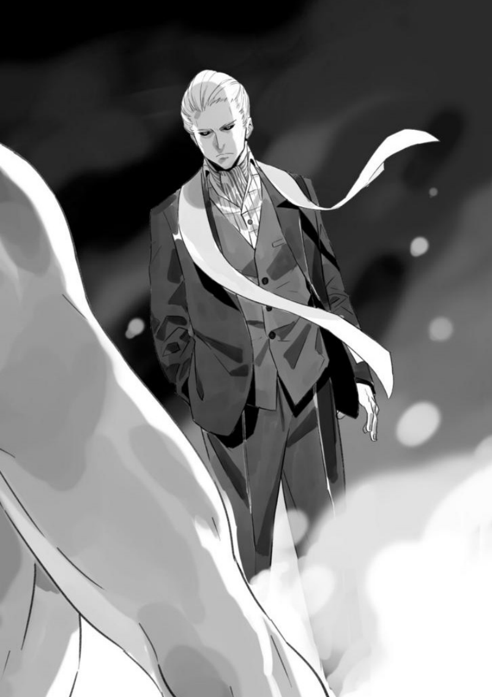

"O Banquete dos Astros (Parte 1)"
O Banquete dos Astros (Parte 1)
A noite anterior à guerra. Em algum lugar de Snowfield.
Na periferia da cidade de Snowfield havia um pequeno distrito industrial onde fileiras de fábricas se erguiam. Bem no fundo desse distrito, praticamente isolada pelas enormes fábricas ao redor, havia uma modesta usina de processamento de carne. Funcionava apenas em certas épocas do ano, provavelmente porque a pecuária local não era exatamente próspera, e poucos moradores da cidade sequer sabiam de sua existência.
O porão daquela fábrica, porém, escondia outra face, uma que não constava em nenhum registro comercial. Era o ateliê de um mago, construído dentro de um Campo Limitado de múltiplas camadas num espaço subterrâneo muito maior que a área do terreno.
Até as fábricas ao redor, que à primeira vista pareciam não ter ligação nenhuma, estavam, quando se seguia longe o suficiente a cadeia de propriedade, no fim todas ligadas a uma única organização: a Família Scladio.
Era uma máfia liderada por Galvarosso Scladio, que conquistara fama no submundo por sua astúcia. Embora fosse chamada de máfia, sua estrutura diferia da organização mafiosa propriamente dita, originária da Sicília. É verdade que a linhagem de Galvarosso Scladio tinha laços distantes com a Máfia Siciliana, mas ele ampliara sua organização unindo-se a uma multidão de grupos distintos ou absorvendo-os, criando uma horda sem rosto, desligada de fronteiras nacionais, laços de sangue ou ideologias.
O nome incomum Galvarosso era um pseudônimo. Segundo uma teoria, ele o criara cruzando "Barbarossa", alcunha do imperador do Sacro Império Romano Frederico I, com seu próprio nome verdadeiro.
E ele espalhara suas raízes larga, funda e profundamente pelo submundo criminoso americano. Historiadores do crime, o FBI e até comentaristas de TV tentaram racionalizar como um homem que se gabara de recriar o Sacro Império Romano na América realmente reunira poder político e econômico suficiente para justificar chamar-se imperador, mas poucos conheciam o motivo verdadeiro.
Ele patrocinava um grande número de magos numa vasta área, tanto dentro quanto fora das fronteiras do país. Magos que haviam perdido disputas de território para outras famílias; magos que tinham ido à falência, incapazes de sustentar financeiramente sua busca por patamares mais altos de magia; magos que haviam
sido expulsos de suas terras natais como hereges; magos escorraçados da sociedade pública como criminosos e vistos como incômodos e fardos pela sociedade mágica; até mesmo alguns magos que bateram à sua porta por conta própria. Tornara-se patrono de magos nas mais variadas circunstâncias e sustentava suas atividades não só com doações diretas de dinheiro, mas também fornecendo terras e usando seu poder público para desalojar os magos que antes as ocupavam.
Um pouco de pressão política ou violência não significava nada para um mago poderoso. Quando se tratava, porém, de brutamontes com conhecimento de sugestão e mesmerismo, além de franco-atiradores e ordens judiciais, o número dos que eram capazes de se defender completamente era, naturalmente, limitado. Até um famoso professor da Torre do Relógio ou um mago renomado em sua área precisaria de um Código Místico especializado para se defender de uma bala inesperada, a menos que fosse tão habilidoso a ponto de lidar com a situação apenas com o poder do próprio Brasão Mágico. Fora isso, até um mago podia morrer rápido demais num encontro casual com arruaceiros ou num ataque aleatório na rua.
Em circunstâncias normais, um caso assim teria sido visto como um problema pela Torre do Relógio e pela Igreja, e imediatamente esmagado. Quando o assunto da Família Scladio enfim veio à tona para discussão, no entanto, eles já haviam obtido certo grau de poder dentro da sociedade mágica.
Mas será que um grupo de magos realmente se uniria para proteger uma organização criminosa? Havia muitos que duvidavam disso, mas os magos sob a proteção da Família Scladio de fato faziam livre uso de seu poder para defender seu patrono.
O principal motivo era que Galvarosso não tinha interesse nos frutos de seus esforços como magos. Não só ele não roubava o fruto do labor deles; sequer se intrometia na natureza de suas pesquisas se os magos não quisessem revelá-la. Os magos apenas lhe diziam do que precisavam, e a Família Scladio não hesitava em providenciar.
Muitos dos magos acostumados a essa relação unilateral sentiam que seu caminho até a Raiz, seu objetivo derradeiro, se fecharia caso a perdessem. Apenas uns poucos magos sentiam alguma obrigação real para com a Família Scladio; a maioria se alinhava voluntariamente à organização depois de considerar racionalmente os próprios interesses como magos.
Como resultado, a Família Scladio exibiu um crescimento incomparável no submundo. Houve outras organizações que sabiam da existência dos magos e tentaram se voltar nessa direção. A maioria, porém, tentou dominar magos pela força e acabou sendo usada ou até destruída por simples sugestão e afins.
No fim das contas, a Família Scladio se agarrou a uma divisão do governo e conquistou poder suficiente para se envolver no Plano Snowfield. Poder suficiente para indicar um dos magos que se tornaria Mestre na Guerra do Santo Graal Falsa.
E, naquela noite, as portas da usina de processamento de carne se abriram, e vários homens entraram no ar frio lá dentro. Quando o fizeram, o grupo de semblantes igualmente duros que já estava ali assentiu aos recém-chegados.
"Que bom que vocês chegaram." "E o Sr. Cordelion?" "Ele já saiu do Centro Correcional, mas ainda não chegou aqui", respondeu um homem, aparentemente um subordinado, com a testa coberta de suor frio. Os recém-chegados franziram o rosto.
"Vocês não foram recebê-lo?" "Faldeus disse que pegaria mal se alguém da Família Scladio fosse ao Centro Correcional... Só ficamos sabendo que ele foi liberado depois do relatório..."
"Tch... Quem aquele capacho do governo pensa que é?" "Me desculpe. Os mais novos saíram para procurar o Sr. Cordelion enquan..." O ruído seco de algo sendo esmagado cortou o resto de suas palavras. "!?" Em uníssono, os homens olharam na direção de onde viera o som: o teto da usina. Vidraças partidas despencaram faiscando pelo ar. E, com elas, caiu um homem, como se estivesse envolto naquele brilho, segurando um vulto em cada mão.
"Mas que..." O que o homem carregava nas mãos eram duas cabeças humanas. Não cabeças decepadas, porém; os corpos ainda estavam presos a elas. Os dois corpos atravessaram a janela, sendo arrastados junto com o homem, e em poucos segundos se chocaram contra o chão de concreto. Sangue espirrou de suas bocas; ao que tudo indicava, ainda estavam vivos.
O homem que arrastara os dois pela janela levantou-se devagar, sem dar a mínima para as gotas de sangue que haviam respingado em seu rosto. Embora ele próprio também tivesse caído pela claraboia, não mostrava expressão alguma, como se nada tivesse acontecido.
Um arrepio percorreu a espinha dos homens de rosto duro na usina quando viram o rosto do homem iluminado pela lua que entrava pela janela quebrada. O que os dominou foram os olhos dele, mais escuros que a própria escuridão da fábrica.
O homem usava luvas pretas e transmitia uma severidade fria. Seus olhos, porém, estavam totalmente desprovidos de "humanidade". Havia neles um brilho próximo ao de uma ave de rapina ou de uma besta carnívora. Mas, em vez de dar a impressão de mirar uma presa, pareciam congelar corações apenas com o olhar.
"Não são os olhos de uma máquina de matar fria e sem emoções, como às vezes se vê em matadores. Se essa máquina tivesse uma única emoção, o impulso de matar, talvez tivesse olhos assim", como Galvarosso,
o chefe da Família Scladio, já dissera. Era esse o grau da fulguração singular nos olhos do homem.
Parecia ter entre trinta e quarenta anos. Seus traços talvez fossem bem proporcionados, mas aquele brilho monstruoso e penetrante de seus olhos arrebatava a alma de qualquer um que se colocasse diante dele. Os homens de expressão dura, porém, não temiam esse brilho. Eles sabiam. Sabiam que o interior daquele homem era muito mais assustador do que o seu olhar lancinante.
"S-Sr. Cordelion!" "..." O homem cujo nome fora chamado não correspondeu aos olhares dos outros. Apenas enfiou a mão no bolso. Quando viram o que ele tirou de lá, os homens estendidos no chão arregalaram os olhos.
"Esp..." Um deles começou a dizer algo, mas palavra nenhuma veio depois disso. Tiro após tiro, disparados de uma pistola com silenciador, cada um acompanhado de um baque abafado, destruíram os corpos caídos.
Mesmo depois de confirmar que aqueles dois montes de carne tinham parado de se mover por completo, o homem não baixou a guarda. Continuou olhando para o chão, apertando com força a pistola.
"Ah, hã... Sr. Cordelion? Quem são eles?" perguntou um dos homens que já estavam na usina desde o começo, o corpo inteiro tomado por suor frio.
Diante disso, o homem chamado Cordelion cuspiu uma voz tão profunda que poderia ter soado das profundezas do inferno. Seu olhar não se moveu.
"...Moscas." "Moscas, senhor?" "Talvez alguém tenha deixado escapar um cheiro de carne. O olfato deles deve ter dado conta do recado."
A maneira como o homem falou fez os outros trocarem olhares surpresos. "Quer dizer que eram espiões de outro mago, Sr. Cordelion? Atrás dos seus Selos de Comando?" "...Limpem isso." "S-sim, senhor!" Os homens de semblante duro, aparentemente seus subordinados, apressaram-se em começar a limpar os cadáveres e o sangue espalhado.
"Há mais lá fora. Ergueram uma barreira para que ninguém os visse", acrescentou o homem, como se estivesse comentando o tempo.
"O quê!? Como pode haver tantos assim!?" Os homens de semblante duro sentiram medo, tanto porque estavam cercados por magos hostis quanto porque
haviam cometido a burrice de não perceber absolutamente nada.
"São trinta e seis", declarou o homem. "Trinta..." "Seis aqui, e trinta lá fora. Cuidem deles rápido", continuou ele para o subordinado embasbacado.
"Sim, senhor! ...O quê?" No chão da usina só havia dois cadáveres. "Estão lá em cima?" Será que havia mais quatro corpos no teto? O subordinado de cara dura supôs que sim e pensava em como faria para descê-los quando... mais baques abafados ecoaram. No instante em que todos olharam para cima, a arma do homem cuspiu fogo, e buracos se abriram nos crânios dos quatro homens que haviam entrado pouco antes dele.
"Mas que..." Os homens que estavam na usina desde o começo enrijeceram, sem compreender. "S-Sr. Cordelion, o que o senhor está..." "Não me incomoda que me subestimem." "Hã?" "Mas esta usina pertence à Família Scladio. Se acharam que podiam entrar neste lugar sagrado usando disfarces desses, foi uma grave ofensa ao Sr. Scladio. Não valiam a pena ser capturados vivos."
No instante seguinte, os rostos dos homens que acabavam de virar cadáveres começaram a se distorcer, revelando feições completamente diferentes.
"!?" Então eram magos inimigos disfarçados de aliados. Será que seus verdadeiros companheiros ainda estavam vivos, ou já tinham sido descartados?
"...Assim que terminarem de limpar a 'carne', desçam", disse aos subordinados o homem que havia abatido mais de trinta magos em tão pouco tempo, sem a menor mudança na expressão, como quem diz que nem sequer lhes daria tempo de pensar nessas perguntas.
"Estou com o catalisador. Vou invocar o Servo."
Snowfield. Em algum lugar pouco iluminado.
"Bazdilot Cordelion. Na superfície, é o CEO de uma empresa de tratamento de resíduos industriais. Por trás disso, é um dos líderes da Família Scladio..." recitou Faldeus Dioland.
"E por trás disso, ele é Bazdilot, o Mago do Massacre, o 'Tubarão Tóxico dos Scladio'!" interrompeu a garota sentada ao lado dele, Francesca. "O por trás do por trás dele não é a frente, é um lado totalmente diferente! É por essas coisas que viver é divertido!"
"É apenas problemático. E que apelidos foram esses? Não há nada sobre um 'Tubarão Tóxico' nem um 'Mago do Massacre' nos meus arquivos."
"Claro que não; fui eu que inventei." "Entendo. Fico feliz em saber." Faldeus lançou um olhar de lado para Francesca, que balançava as pernas contente no sofá. "Ele é suspeito de envolvimento em mais de cento e vinte casos de homicídio", continuou, olhando os documentos em suas mãos. "Em todos eles, porém, as provas são insuficientes. Ao que parece, conseguiram prendê-lo com uma coleção de contravenções. Na primeira prisão para onde foi enviado, no entanto, três guardas e vinte e seis detentos 'desapareceram' em seis meses. Ele tomou a prisão inteira para a Família Scladio... Deve ter sido trabalhoso encobrir isso."
"Talvez ele tenha escolhido gente cujo desaparecimento dava para encobrir? Pelo visto, ele presta alguma atenção ao sigilo mágico por causa da Scladio. Talvez esteja até usando a fama deles como gangue para encobrir o fato de ser mago."
"Embora sua carreira como mago seja violenta num nível difícil de superar... Ele vem de uma linhagem adaptada a uma escola bastante distorcida de 'dominação'. Uma magia que se concentra em dominar não os outros, mas a si mesmo... Ao que parece, difere do fortalecimento físico, mas os detalhes são obscuros. Talvez também domine uma escola de feitiçaria popular do extremo oriente que a Torre do Relógio despreza, e assim por diante."
Faldeus estreitou os olhos enquanto continuava a ler os materiais, como se estivesse cansado. "Ele é suspeito de ligação com o assassinato de vários magos e, ao que parece, vinha sendo monitorado pelo Departamento de Administração da Justiça. Como resultado de certo incidente, no entanto, entrou em confronto com a Abadia Sponheim... e, em meio a isso, acabou sob a proteção da Família Scladio."
"Ah, Sponheim. Sabe, ouvi dizer que eles estavam numa confusão danada naquela época por causa do desaparecimento do próximo abade, ou algo assim. Do contrário, nem a Família Scladio conseguiria acobertá-lo", cacarejou Francesca.
"Eu ainda sou contra isso, Sra. Francesca", resmungou Faldeus. "Digo, trazer um homem com tantos inimigos para esta Guerra do Santo Graal, ao ponto de tirá-lo da prisão. Se não tomarmos cuidado,
isso pode acabar unindo as facções da Torre do Relógio contra nós. Mesmo que isso ainda esteja dentro do esperado, poderíamos muito bem ser atacados por direções que nem sequer conseguimos imaginar."
"Mas os outros são bem parecidos. Sigma e a pequena Doris, a filha mais nova da família Lusendra, uma linhagem de magos de fortalecimento do extremo norte, entraram no país ilegalmente. Cashura usou magia ortodoxa de dominação e projeção para tocar o terror em Wall Street, e Haruri é a enfant terrible da bruxaria. E ainda tem Faldeus, que traiu a Torre do Relógio! É, basicamente só um monte de crianças-problema."
"Estou confiante de que consigo controlar esse elenco, eu incluso. Você e Bazdilot Cordelion, porém, são outra história."
Faldeus estreitou os olhos, virou-se para Francesca e começou algo parecido com um sermão cheio de rodeios.
"Tem mesmo certeza de que era aceitável deixar um homem daqueles colocar as mãos numa coisa assim?" "Está tão preocupado assim? Está tudo bem, não se incomode com isso. Talvez aquilo já estivesse ficando difícil até para mim lidar, e ninguém sabe o que o futuro reserva, então qual é o problema?"
"Não temos intenção de brincar com seu hedonismo. Se necessário, talvez tenhamos de forçar você e Bazdilot a deixarem o palco."
"Nossa, que medo. Vai mandar um atirador me apagar? Não, você vai querer ter certeza de que acabou comigo, então talvez uma bomba?"
O tom glacial de Faldeus deixava claro que suas palavras não eram brincadeira, mas Francesca explodiu numa gargalhada como uma criança que acabara de ouvir uma. Suas bochechas se coraram levemente de excitação, ciente de que não se tratava de uma ameaça vazia.
"Ainda assim, talvez isso até seja bom. Brincar com vocês é definitivamente uma opção. Eu não sou patriota; para começo de conversa, nem nasci nem fui criada na América."
"..." Faldeus se recusou a dar ouvidos às piadas de Francesca. Esperou para ver o que ela faria, fazendo a energia mágica circular por seu corpo. Francesca percebeu a cautela dele, mas continuou estirada no sofá, deliberadamente indefesa.
"Na vez em que Elder Title e o último lobo dourado quase se destruíram um ao outro, o destino de um país inteiro acabou sendo decidido, então, quando chega a hora de brincar, tem que ser algo grande e chamativo, como esta Guerra do Graal! Ah, só de imaginar eu já fico toda empolgada! Os Estados Unidos da América versus a bela maga! Tem um belo som, não acha?"
"Não há nada de belo nisso. E nem alimente a presunção de que um indivíduo poderia prevalecer contra a nossa orgulhosa nação. Ouvi dizer que a agência já 'apagou' você duas vezes no passado."
"Ah, é mesmo! Fui apagada mesmo! Doeu bastante, viu? Quantidade realmente assusta!"
Francesca confirmou que fora descartada pelo Estado com a mesma indiferença de quem fala de algo sem relação alguma consigo mesma.
"...Eu não consigo entender isso. Nem o que o governo está pensando ao se unir a você de novo, mesmo depois de décadas, nem a sua cara de pau de se unir ao governo que tentou apagar sua existência."
"Isso só significa que seus superiores pensam tão bem assim da minha capacidade, e eu não esquento com detalhe pequeno. É só isso. Além do mais, já estou acostumada a ter meu corpo morto."
"Acredito entender seu modo de existência, mas isso ainda é uma afirmação difícil de engolir." "Ter meu corpo morto não é motivo para desespero nem nada do tipo. Para começo de conversa, só uma pessoa já me matou de verdade. Bom, um monte de gente matou meu corpo, mas acho que consigo contar nos dedos quantos me fizeram pedir arrego."
Ela fitou o vazio, como se estivesse rememorando o passado, e rangeu os dentes ruidosamente enquanto ria.
"Deixa eu ver... Acho que o Velho Kishua foi o primeiro. Saint-Germain, o hedonista; a bruxa de conto de fadas que vive para sempre, ou melhor, que 'vivia' para sempre agora, eu acho; depois teve aquele sugador de sangue rico de Mônaco... e um professor de alguma escola que usa Godo Word, um dialeto antiquíssimo... e, falando em professores, também teve meus mestres de magia, e..."
A ladainha de nomes e termos fez Faldeus, que conhecia todos os cantos secretos da sociedade mágica, se perguntar se aquilo não era algum tipo de piada. O último apelido que saiu da boca de Francesca, porém, despertou nele uma lembrança particularmente forte.
"Ah! E aquela garota! Scar Red!" "...Chamá-la assim na cara dela vale mais do que a sua vida." O apelido peculiar, carregado ao mesmo tempo de desprezo e assombro, pertencia a uma das maiores magas da Torre do Relógio, uma marionetista genial que superava Faldeus e Rohngall de longe. Entre os magos afiliados à Torre do Relógio, era simultaneamente bastante famoso e um tabu absoluto.
Aquela maga, que no fim acabara alcançando o posto de Grand, recebera da Torre do Relógio uma "Cor", na prática um título. Não conseguira, porém, obter a cobiçada designação de "Azul", e terminara recebendo uma tonalidade próxima do "Vermelho", nem sequer a cor primária propriamente dita. Alimentava um ódio anormal pelo apelido mencionado, que lhe fora dado de forma sarcástica como resultado disso. Dizia-se que ela mataria, sem exceção, qualquer um que o usasse em sua cara. Faldeus sabia que aquilo não era um mero boato; era a pura verdade.
Embora... suponho que a Sra. Francesca realmente fosse capaz de fazer isso... "É, e nem eu fui exceção", cacarejou Francesca, como se tivesse adivinhado os pensamentos de Faldeus. "Eu
falei isso na cara dela e acabei morrendo um monte de vezes!"
Depois que a risada se dissipou, Francesca inflou as bochechas e pareceu um pouco contrariada. "Foi horrível de verdade, sabe? Ela é teimosa, ardilosa, destrói as oficinas dos outros e rouba tudo o que lhe dá na telha, e mesmo quando você vira o jogo e mata ela, a desgraçada só ativa o _______ embutido no corpo e depois volta como se nada tivesse acontecido. Depois que ela me matou umas treze vezes, eu fiz um pedido formal à família dela e consegui que interviessem, mas..."
Francesca suspirou e balançou a cabeça. Ao que tudo indicava, alguma coisa acontecera entre ela e a "família".
"No fim, ela me matou uma última vez e ainda me ameaçou, tipo, 'nunca mais mostre esses seus Circuitos Mágicos retorcidos na minha frente'! E foi assim que eu vim parar neste corpo."
Nesse momento, Francesca recuperou o sorriso e arqueou o corpo de maneira sedutora. "E então?" parecia perguntar o gesto. Faldeus, porém, não se abalou nem um pouco e levantou uma questão própria.
"Você conseguiu esse corpo há cerca de três anos, correto? Foi por isso que se opôs tão veementemente quando a cúpula de então sugeriu contratá-la?"
"Bom, esse foi um dos motivos... De todo modo, aposto que ela teria recusado vocês. Ela só aceita trabalhos que combinam com o gosto dela. Ao que parece, a família dela valoriza interesse mais do que dinheiro. Ah, mas talvez ela cooperasse se vocês pedissem que fizesse um boneco capaz de encarnar Espíritos Heroicos."
Depois de terminar de falar de magos que não estavam diretamente envolvidos nesta Guerra do Graal no momento, Francesca apagou de repente o sorriso do rosto.
"Não que eu seja a pessoa ideal para falar disso, mas as cópias de memória nos bonecos da Scar Red são perfeitas. Tão perfeitas que me fazem pensar se ela não copia até a alma."
"Isso..." Faldeus começou a dizer algo em resposta às palavras da garota, mas então franziu a testa e desistiu. Francesca, por sua vez, soltou com naturalidade as palavras que ele hesitara em pronunciar.
"Você está se perguntando se ela talvez tenha chegado à Terceira Magia, não é? Bem, se chegou, então tudo o que estamos fazendo é uma farsa, e isso seria hilário! Hahaha!"
A garota explodiu em outra crise de riso. Faldeus, diante dela, soltou mais um suspiro, e as rugas em sua testa se aprofundaram.
"Não há nada de engraçado nisso. Seria uma perda não só para este país, mas para a sociedade mágica como um todo."
"Está tudo bem. Tenho certeza de que a Terceira Magia vai deixar de ser Magia Verdadeira em pouco tempo. Aliás, vocês esqueceram qual é o objetivo supremo de vocês? 'Arrastar a Terceira Magia para o nível da magia'?"
"...Objetivo nosso? Não quer dizer o seu?"
"Está na minha lista, mas é só uma parada no caminho. Acho que vamos conseguir reproduzi-la assim que os pioneiros das estrelas avançarem mais alguns níveis. O mesmo vale para a própria Guerra do Graal. Então vou dar início ao maior número possível de Guerras do Graal. Quero que vocês demonstrem algum entusiasmo ao analisar o padrão disso tudo."
O tom de Francesca se tornara suave, como se estivesse cheio de afeto por alguma coisa. Os olhos de Faldeus se arregalaram.
"Eu tinha certeza de que você pretendia tornar-se a mestra da Terceira Magia." "Ora, que surpresa", riu Francesca. Então esticou as pernas no sofá e se levantou de um salto, cheia de energia.
"Hop... Bem, deixando Scar Red de lado, vamos só dizer que isso nem é possível, dada a minha natureza... Qual seria a graça de uma maga como eu se tornar uma Maga nessa altura do campeonato?"
"...Isso não soa como as palavras de alguém que acabou de chamar os outros de 'hedonistas' e de 'famílias que só agem quando têm interesse'."
"E eu por acaso disse que sou diferente? Embora eu seja mais fofa do que as duas." "..." O rosto de Faldeus dizia que ele estava além das palavras de exasperação. O sorriso que Francesca exibiu era diferente dos sorrisos inocentes de antes. Havia nele algo maduro e enfeitiçante.
"A magia, aquilo que as pessoas conseguem reproduzir, tudo bem. Mas a Magia Verdadeira define os limites humanos. Seríamos melhores sem ela. Eu acredito nisso, e também acredito que faz parte da natureza humana a tolice de tentar encarar essa parede."
Então ela fechou os olhos em silêncio, como se ponderasse o futuro do "festival" prestes a começar.
"Seja ele enraizado numa virtude sem fundo... ou numa malícia sem limite superior."
Usina de processamento de carne. Porão.
"Eu pediria que respondesse à minha pergunta, ó mago."
Um "grande herói". Ou algo que deixava até mesmo essas palavras para trás.
"É você quem deve se tornar meu Mestre e me impor provações?"
Não havia outra maneira de descrever o ser que se manifestara no porão da usina de processamento de carne, cercado por uma barreira de múltiplas camadas.
"Quem decide isso é você, não eu", respondeu friamente o homem que o invocara, Bazdilot Cordelion.
Enquanto isso, os magos de terno que o serviam faziam seus Circuitos Mágicos tremerem enquanto eram tomados por suor frio. Bastara um único olhar para que entendessem que a entidade que acabara de se manifestar pertencia a um plano diferente do deles.
Antes de tudo, sua estatura ultrapassava os limites humanos. Parecia uma estátua talhada por um deus. Com mais de dois metros e meio de altura, as pontas de seus cabelos quase roçavam o teto. Era um homem grande e musculoso, mas cada fibra de seus músculos e cada gota de sangue em suas veias transbordavam de um Od tão puro que podia ser chamado de divino. Os magos tiveram a impressão de que só aquele corpo já bastaria para dissipar com facilidade até mesmo magias em grande escala que exigissem um grupo para serem conjuradas, sem falar em seus próprios feitiços medíocres.
A mera atmosfera que exalava bastava para dominar o recinto. Bastaram poucos segundos de sua conduta para fazer quem o visse sentir que ele era praticamente divino. Se aquele Espírito Heroico saísse de controle, eles nada poderiam fazer, e qualquer coisa que ele fizesse teria de ser aceita como a coisa certa. Fantasias assim começaram a se apoderar dos homens de Bazdilot diante daquela figura perfeita.
O Espírito Heroico era, de fato, capaz de massacrar todos os humanos do recinto com as próprias mãos nuas. Em contraste com a pressão que seu corpo e sua energia mágica exerciam, porém, ele permanecia no centro do ateliê com a compostura calma de um cavalheiro.
Aquilo, no entanto, apenas tornava ainda mais evidente a excepcionalidade do Espírito Heroico, e todos os magos ali, exceto Bazdilot, sentiam o cérebro ser sacudido sem parar pelo impulso de fugir. Aquele não era um lugar para magos sem valor como eles. Estavam contemplando um ser que eles não tinham o direito de contemplar.
E, ainda assim, nenhum deles se moveu. O medo que sentiam estava sendo contido por um medo maior. Não podiam fugir enquanto Bazdilot ainda estivesse ali. Essa era a única razão.
"______________________." "______________________." Bazdilot discutia alguma coisa com o Espírito Heroico, mas os homens não ouviam. Era uma conversa entre um ser muito além do humano e o próprio senhor deles. Quando finalmente conseguiram distinguir as palavras, a expressão do Espírito Heroico havia anuviado. Diante de um Espírito Heroico visivelmente mal-humorado, Bazdilot continuava sem expressão.
"E então? Responda à pergunta." "..."
"Perguntei se, para alcançar a vitória em batalha, você seria capaz de matar uma criança pequena com suas próprias mãos."
"Não seria. Se alguém me ordenasse tal coisa, essa pessoa seria minha inimiga." Uma voz solene fluiu dos lábios do herói impassível. "Você está... me testando?" Uma pressão invisível fez um vento varrer o ateliê conforme ele falava. Era puro poder, não energia mágica. Uma presença tão pesada que um humano comum dificilmente escaparia com vida ao suportá-la de frente roubou dos magos até a liberdade de se mover.
"Se fala assim, sabendo minhas origens... julgo que está apostando a própria vida." Na perspectiva dos magos supérfluos, aquelas palavras, proferidas com tamanha força, soaram nada menos que uma sentença de morte. Eles se prepararam para virar dano colateral. Ainda assim, não sentiam ódio do superior; apenas medo misturado com resignação.
Esse superior, impassível diante da pressão que ameaçava esmagá-lo junto com a sala inteira, devolveu o olhar do herói com aquele brilho inumano nos olhos e deu sua resposta.
"Naturalmente. Joguei minha vida fora há muito tempo." Então ergueu a mão direita, fazendo brilhar o desenho em seu dorso.
"Pelo meu Selo de Comando, eu lhe ordeno:"
"...Tolice." O Espírito Heroico balançou a cabeça, julgando que o homem pretendia impor sua dominação por meio de um Selo de Comando.
As amarras efetuadas por um Selo de Comando eram apenas momentâneas. Ele sabia que seria capaz de se desvencilhar delas com facilidade usando a própria energia mágica. Mesmo que lhe ordenassem se matar com os três Selos de Comando, julgava que três suicídios a mais ou a menos não representariam problema. Ainda assim, decidiu que, se a tentativa ensinasse ao mago a inutilidade de tentar prendê-lo com Selos de Comando e o ajudasse a entender o próprio lugar, não impediria que desperdiçasse um selo.
O Espírito Heroico era nobre demais. Se fosse do tipo que não mede meios diante do perigo, teria esmagado a cabeça do mago ou a teria lançado pelos ares antes que ele terminasse de ativar os Selos de Comando. Na verdade, se tivesse sido invocado como Rider ou Assassin, provavelmente teria feito exatamente isso. Invocado como um dos três cavaleiros, porém, como agora estava, seu aspecto de "herói sem mácula", transmitido pelas epopeias, vinha fortemente à tona. Consequentemente, assumira uma dignidade que se assemelhava a uma forma de cavalheirismo.
Isso criou uma falha fatal na armadura daquele grande herói além da compreensão humana. Pois
a ordem que lhe foi lançada por meio de um Selo de Comando não era uma exigência de juramento de lealdade.
"Não dê desculpas."
O herói soltou um grito de surpresa quando um dos Selos de Comando de Bazdilot brilhou... e sua poderosa energia mágica começou a escavar caminho para dentro de seu cérebro.
Impossível. Mesmo contando Guerras do Graal passadas, a energia mágica do herói era de primeira classe. As bruxas da Era dos Deuses seriam outra história, mas nenhum mago moderno deveria ser capaz de interferir em sua mente. E, no entanto, embora viesse por meio de um Selo de Comando, "algo" no mago diante de seus olhos começara a chacoalhar-lhe o cérebro. O herói se lembrou de já ter experimentado antes uma sensação semelhante, aquela corrosão roedora. Algo da mesma natureza estava sendo solto dentro dele pelo homem à sua frente.
"O que... você..."
"Não há necessidade de esconder seus crimes nem seus arrependimentos. Exponha suas profundezas. Eu as verei por completo." Bazdilot, ainda sem expressão, tentou o herói com uma voz que parecia soar das profundezas do inferno.
"Eu não preciso do seu poder como herói. Preciso da avareza que o leve a não medir meios em prol do seu objetivo. Preciso da convicção delirante que leva um homem a escolher qualquer meio vil sem hesitar, mesmo na busca de fins nobres", murmurou ao Espírito Heroico agora imóvel, e ergueu a mão esquerda uma segunda vez.
"Pelo meu Selo de Comando, eu lhe ordeno mais uma vez: lembre-se dos humanos que já viu."
Aquelas palavras deviam ter algum significado especial. Do contrário, estariam carregadas de alguma intenção maligna.
O Selo de Comando, transformado numa massa de energia mágica, pegou a ordem que fizera os ouvidos do herói estremecerem e a fez penetrar fundo em seu cérebro.
Sua visão vacilou. Nos intervalos, os rostos de todos os seres humanos que o herói conhecera em vida flutuaram diante dele. Havia entre eles descendentes remotos de deuses, mas, perante ele, todos não tinham passado de "meros humanos".
Um tirano, retrato da covardia, lamentou-se, apavorado demais até para ficar em pé:
"Eu entendo! Vou exaltá-lo! Pela minha honra como rei, vou exaltá-lo!
"E-então não chegue mais perto, monstro!"
Um homem loiro, notável por seu porte altivo, disse:
"Incrível! Estou com inveja! Os rumores eram verdadeiros: você é um monstro! Não tema. Eu vou tratá-lo
bem e usá-lo da melhor forma. Enquanto estiver comigo, você deixará de ser um monstro.
"Você é um grande herói, o guardião de um futuro rei."
Logo antes de escolher a própria morte, a mulher que ele amara disse:
"Você não fez nada de errado. Então, por favor, não amaldiçoe o mundo. Não odeie o próprio sangue.
"Você é forte, então tenho certeza de que consegue.
"Eu não consegui."
Logo antes de ele lhe esmagar a cabeça e atirá-lo às chamas, aquele que deveria ter sido um soldado inimigo dissera:
"Pa..."
As figuras humanas se sobrepuseram em muitas, muitas camadas, sem levar em conta a ordem em que ele as conhecera, e desapareceram. Como se estivessem chamando umas às outras, um volume antinatural de energia mágica começou a despejar-se nele por meio do Selo de Comando.
Impossível. Nenhum humano desta era possui tanta energia mágica! Isso é como... uma bruxa da minha própria era...
O herói sem igual caiu silenciosamente de joelhos ali mesmo. Confrontados com aquela cena inacreditável, os homens de Bazdilot ficaram atônitos. Um ser claramente de ordem superior estava sofrendo diante de um mago, seu próprio superior.
Uma relação de Mestre e Servo. Todos os que contemplavam aquela cena entendiam que ela não podia ser explicada de modo tão simples. Perceberam, porém, que um preço definido havia sido cobrado.
Na Guerra do Santo Graal, os Selos de Comando que cada Mestre possuía equivaliam a linhas de vida. Eram trunfos capazes de impor uma ordem ou proibição a um Servo e até de produzir feitos próximos da Magia Verdadeira, como transporte instantâneo e fuga de emergência. E Bazdilot já havia gasto dois dos três. Quando levavam em conta que o último Selo de Comando restante
precisava ser mantido em reserva caso o Servo se rebelasse, Bazdilot efetivamente já não tinha mais Selos de Comando utilizáveis pelo restante da Guerra do Graal.
Os magos se preocuparam ao ver que ele assumira uma desvantagem tão definida, mas uma espécie de confiança, que acompanhava o medo que sentiam, tranquilizou-os com a ideia de que Bazdilot daria um jeito. Essa tranquilidade, porém, desmoronou poucos segundos depois.
"Pelo meu Selo de Comando, eu lhe ordeno mais uma vez:"
Aquelas palavras congelaram os magos no ateliê subterrâneo. Bazdilot ia gastar os três Selos de Comando logo na invocação. Diante do superior cometendo um ato tão estúpido que nem uma criança o faria, se conhecesse a Guerra do Graal, os magos prepararam-se para morrer desta vez com certeza.
O Espírito Heroico, por sua vez, também se decidiu enquanto continha a energia mágica que se insinuava para dentro dele.
Este mago é perigoso. Ele não via o gasto do último Selo de Comando por Bazdilot como uma tolice. Percebera que, ainda que isso não se refletisse na expressão do mago, ele estava apostando a própria vida. Estava jogando toda a própria existência para transmutar o Espírito Heroico em outra coisa.
Qualquer que seja a ordem que ele dê com o último Selo de Comando, preciso ao menos eliminar este homem. Nem mesmo o Espírito Heroico era capaz de compreender a natureza do poder que o corroía. Se não tomasse cuidado, porém, essa corrosão poderia se espalhar aos outros Espíritos Heroicos invocados para a Guerra do Santo Graal. E, mesmo enquanto suprimia desesperadamente a maldição da própria vida que fervia dentro de si, o grande herói permanecia nobre.
Preciso detê-lo. Preciso deter o tirano perverso que dominaria esta era. Mesmo depois de a poluição mental ter ultrapassado um ponto que provavelmente enlouqueceria a maioria dos Servos, esse grande herói ainda estendia a mão não para se defender, mas em favor dos outros Espíritos Heroicos e dos habitantes desta era, a quem ele ainda nem conhecia. Não se importava se o chamassem de indigno. Não se importava se o chamassem de espírito enlouquecido por voltar as mãos contra o próprio Mestre. O homem celebrado como herói entre heróis decidira lançar ao vento até a própria honra e matar o mago diante dele em nome de alguém que ainda não havia visto.
Então, no exato momento em que sacudira a poluição mental e sua mão estava prestes a alcançar o pescoço do mago... Bazdilot gastou o último Selo de Comando, como se zombasse da nobreza do herói.
"Aceite a natureza humana, a veste da terra."
Todos no ateliê, exceto o próprio Bazdilot, viram "aquilo". No instante em que Bazdilot gastou todos os seus Selos de Comando, outra tatuagem, marrom-avermelhada, surgiu do punho esquerdo de sua manga... e começou a se contorcer como alguma criatura medonha.
Na penumbra.
"Bem, então, com licença. Preciso começar os preparativos para a minha invocação." "Claro, não me importo. De qualquer jeito, quero ver a invocação do Artie com calma sozinha", disse Francesca, balançando as pernas. Ela havia saído do sofá e se mudado para a cama.
Observando aquilo, Faldeus fez um último aviso. "Sra. Francesca, sei muito bem dos banhos de sangue pelos quais você já passou. Ainda assim, um mago amador como eu não consegue deixar de se preocupar."
Nesse ponto, Faldeus estreitou os olhos e, sem fazer a menor tentativa de esconder a hostilidade em relação ao homem chamado Bazdilot, continuou:
"Foi mesmo aceitável entregar 'aquilo' àquele homem?" "Isso te incomoda tanto assim? Mas nem eu conseguiria arranjar energia mágica suficiente para manter em plena potência o Espírito Heroico que dá para invocar com esse catalisador, sabia? Para isso, realmente precisa da combinação do Baz com os Scladio."
"Não estou falando do catalisador. Estou falando do 'subproduto' que você trouxe de Fuyuki."
"Ah", assentiu Francesca, exibindo um sorriso malicioso. "Não tinha jeito. Quero dizer, eu e o Baz somos praticamente os únicos que conseguimos lidar com 'aquilo', muito menos cultivá-lo, sem perder o ego no processo...
"E eu não quero ficar tocando naquela 'lama' repulsiva o tempo todo! Ahaha!"
A usina de processamento de carne.
Era uma cena bizarra. Aquele algo marrom-avermelhado que havia fluído para o corpo do Espírito Heroico junto com o poder dos Selos de Comando o corroía. O Espírito Heroico liberou sua própria energia mágica para se opor, varrendo mais da metade das barreiras em torno do ateliê. Vários
dos magos, bombardeados por mais energia mágica do que eram capazes de suportar, tombaram no chão convulsionando.
Mesmo exposto à torrente de energia mágica, porém, Bazdilot mantinha o olhar lancinante fixo no Espírito Heroico.
"Celebre, afirme e ame aquilo que rejeitaram. Não se contenha." Ele lançou não apenas o poder dos Selos de Comando, mas também sua própria energia mágica acumulada pela mão esquerda estendida. Continuou forçando para dentro do Espírito Heroico aquele algo marrom-avermelhado que se estendia da sua mão, fazendo uso até mesmo da magia popular oriental que a Torre do Relógio repudiava como heresia.
Ele estava atravessando o muro da resistência mágica com sua feitiçaria primitiva, abrindo caminho para que aquela coisa marrom-avermelhada, sombria e contorcida se insinuasse diretamente para dentro. O custo disso já ultrapassava o que parecia concebível para as reservas totais de energia mágica de Bazdilot. O Espírito Heroico suspeitou que houvesse algum truque ali, mas não podia se dar ao luxo de gastar esforço para descobri-lo.
Agarrando o próprio corpo e cravando as unhas em cada centímetro dele, o Espírito Heroico se lembrou da dor do veneno que o levara à morte. O sofrimento que sentia devia ser de outra espécie, mas seus instintos puxaram das memórias o tormento daquele veneno. Seus instintos berravam que o poder que agora fluía para dentro dele era igualmente perigoso.
Mesmo suportando aquela dor quase indescritível, o Espírito Heroico se debatia desesperadamente para reprimir os "impulsos" que o instigavam por dentro e por fora. No instante seguinte, porém, a "lama" que Bazdilot lhe enviara entrelaçou-se com a "maldição" que ele carregava dentro de si como carma, e o herói ajoelhado soltou um rugido que sacudiu o próprio espaço.
"________________________
__________________
________________________!"
Como se respondesse em simpatia a esse rugido, uma mudança dramática tomou conta de seu corpo. Assim que pareceu que o corpo inteiro do Espírito Heroico havia sido envolvido em lama marrom-avermelhada, os músculos desapareceram de seus membros grossos e robustos. Sua altura diminuiu quase cinquenta centímetros, como se o próprio esqueleto tivesse se contraído. A coisa lamacenta que lhe cobria o corpo transformou-se num corante e tingiu sua pele de marrom-avermelhado. Então o outro tipo de poder que se entrelaçara com a "lama" formou um pigmento branco e marcou-lhe o peito com um desenho radial, como uma cicatriz de ter o coração arrancado. No mesmo instante, o grito do herói cessou de súbito, e ele se levantou em silêncio, como se nada tivesse acontecido.
"Como é se livrar do excesso?" perguntou Bazdilot friamente, ainda com a mão esquerda erguida. "Daqui em diante, essa lama deve lhe dar o poder para compensar isso."
O Espírito Heroico apenas o encarou de volta, em silêncio. "O vínculo já está estabelecido, mas... vou perguntar antes." Bazdilot fitou o Espírito Heroico que, embora encolhido, ainda era um palmo mais alto do que ele. Seu tom permaneceu indiferente.
"Eu lhe pergunto: você é meu Servo?" Após um breve silêncio, o Espírito Heroico respondeu. "...Por que não?" Abriu o pano que usava sobre os ombros e o puxou por cima da cabeça, ocultando o rosto.
"Para cumprir minha vingança... eu vou usar você. Quando você perder seu valor... vou torcer seu pescoço com minhas próprias mãos."
Tendo vestido aquela aparência bizarra, o Espírito Heroico fez esse pronunciamento perturbador numa voz tão inteligente que era difícil acreditar que ele estivera à beira da loucura.
"Por que esconde o rosto?" perguntou Bazdilot. Naturalmente, ele continuava sem expressão. "...Como precaução. Para que as obras do homem nunca mais entrem no meu campo de visão." "...Ah, entendo. Então aquele pano é a 'pele' daquilo. Se você consegue se mover livremente assim, não há problema." "É assim que deve ser... De qualquer forma, não tenho intenção de expor meu rosto ao mundo. Não até usar o Santo Graal para purgar meu verdadeiro nome."
O Espírito Heroico afirmava que usaria o Santo Graal para apagar um "nome".
Ao ouvir aquela declaração estranha, Bazdilot resmungou, levou a mão ao queixo e ponderou em voz alta:

"Nesse caso, como devo chamá-lo? Sua natureza original foi tão alterada... alternativa... Que tal chamá-lo de 'Alter'?"
Em resposta, o Espírito Heroico balançou levemente a cabeça e pronunciou seu nome. Ele havia mudado completamente desde o instante da invocação e, ainda assim, o nome que falou era sua origem.
"Meu nome é..."
Começando pelos eventos da usina de processamento de carne, vários Espíritos Heroicos desceram sobre Snowfield naquela noite, mais ou menos ao mesmo tempo em que Saber se materializava na casa de ópera. Alguns concluíram a invocação como haviam planejado, alguns chamaram Espíritos Heroicos que jamais poderiam ter previsto, e alguns perderam a vida antes mesmo de ter a chance de ver o que haviam invocado.
Enquanto os Mestres e os Espíritos Heroicos que haviam invocado brincavam com os destinos uns dos outros, a "Guerra do Santo Graal Falsa", cujo conjunto completo de Espíritos Heroicos já havia sido reunido, entregou-se a um breve período de sono. Para então se oferecer como medalhas de honra aos vencedores que a buscavam.
Tendo como canção de ninar o festim de Espíritos Heroicos que engoliria a cidade.